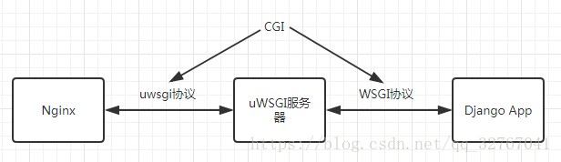

Http 004CGI相关概念介绍
1. CGI
1.1 CGI简介
CGI，（Common Gateway Interface）通用网关接口，是一个协议，是外部应用程序（CGI程序）与WEB服务器之间的接口标准，该协议定义了Web服务器调用外部应用程序的时候需要输入的参数和给Web服务器的返回结果。
最早的Web服务器简单地响应浏览器发来的HTTP请求，并将存储在服务器上的HTML文件返回给浏览器，也就是静态html。事物总是不断发展，网站也越来越复杂，所以出现动态技术。但是服务器并不能直接运行php，asp这样的文件，自己不能做，外包给别人吧，但是要与第三做个约定，我给你什么，然后你给我什么，就是握把请求参数发送给你，然后我接收你的处理结果给客户端。那这个约定就是 common gateway interface，简称cgi(通用网管协议)。这个协议可以用vb，c，php，python来实现。cgi只是接口协议，根本不是什么语言。
1.2 Web服务器与CGI程序的交互
WEB服务器将根据CGI程序的类型决定数据向CGI程序的传送方式，一般是通过标准输入/输出流和环境变量来与CGI程序间传递数据。 如下图所示：
CGI程序通过标准输入（STDIN）和标准输出（STDOUT）来进行输入输出。此外CGI程序还通过环境变量来得到输入，操作系统提供了许多环境变量，它们定义了程序的执行环境，应用程序可以存取它们。Web服务器和CGI接口又另外设置了一些环境变量，用来向CGI程序传递一些重要的参数。 常用CGI环境变量：
| 变量名 | 描述 |
|---|---|
| CONTENT_TYPE | 这个环境变量的值指示所传递来的信息的MIME类型。目前，环境变量CONTENT_TYPE一般都是：application/x-www-form-urlencoded,他表示数据来自于HTML表单。 |
| CONTENT_LENGTH | 如果服务器与CGI程序信息的传递方式是POST，这个环境变量即使从标准输入STDIN中可以读到的有效数据的字节数。这个环境变量在读取所输入的数据时必须使用。 |
| HTTP_COOKIE | 客户机内的 COOKIE 内容。 |
| HTTP_USER_AGENT | 提供包含了版本数或其他专有数据的客户浏览器信息。 |
| PATH_INFO | 这个环境变量的值表示紧接在CGI程序名之后的其他路径信息。它常常作为CGI程序的参数出现。 |
| QUERY_STRING | 如果服务器与CGI程序信息的传递方式是GET，这个环境变量的值即使所传递的信息。这个信息经跟在CGI程序名的后面，两者中间用一个问号’?’分隔。 |
| REMOTE_ADDR | 这个环境变量的值是发送请求的客户机的IP地址，例如上面的192.168.1.67。这个值总是存在的。而且它是Web客户机需要提供给Web服务器的唯一标识，可以在CGI程序中用它来区分不同的Web客户机。 |
| REMOTE_HOST | 这个环境变量的值包含发送CGI请求的客户机的主机名。如果不支持你想查询，则无需定义此环境变量。 |
| REQUEST_METHOD | 提供脚本被调用的方法。对于使用 HTTP/1.0 协议的脚本，仅 GET 和 POST 有意义。 |
| SCRIPT_FILENAME | CGI脚本的完整路径 |
| SCRIPT_NAME | CGI脚本的的名称 |
| SERVER_NAME | 这是你的 WEB 服务器的主机名、别名或IP地址。 |
| SERVER_SOFTWARE | 这个环境变量的值包含了调用CGI程序的HTTP服务器的名称和版本号。例如，上面的值为Apache/2.2.14(Unix) |
1.3 CGI工作原理
每当客户请求CGI的时候，WEB服务器就请求操作系统生成一个新的CGI解释器进程(如php-cgi.exe)，CGI 的一个进程则处理完一个请求后退出，下一个请求来时再创建新进程。当然，这样在访问量很少没有并发的情况也行。但当访问量增大，并发存在，这种方式就不适合了，于是就有了FastCGI。
2. FastCGI
2.1 FastCGI简介
CGI的一个扩展，像是一个常驻(long-live)型的CGI ，废除了 CGI fork-and-execute （来一个请求 fork 一个新进程处理，处理完再把进程 kill 掉）的工作方式，转而使用一种长生存期的方法，减少了进程消耗，提升了性能。
2.2 FastCGI工作原理
- Web Server启动时载入FastCGI进程管理器（IIS ISAPI或Apache Module)
- FastCGI进程管理器自身初始化，启动多个CGI解释器进程(可见多个php-cgi)并等待来自Web Server的连接。
- 当客户端请求到达Web Server时，FastCGI进程管理器选择并连接到一个CGI解释器。Web server将CGI环境变量和标准输入发送到FastCGI子进程php-cgi。
- FastCGI子进程完成处理后将标准输出和错误信息从同一连接返回Web Server。当FastCGI子进程关闭连接时，请求便告处理完成。FastCGI子进程接着等待并处理来自FastCGI进程管理器(运行在Web Server中)的下一个连接。 在CGI模式中，php-cgi在此便退出了。
3. WSGI
WSGI，（WEB SERVER GATEWAY INTERFACE），Web服务器网关接口，是一种Web服务器网关接口，它是一个Web服务器（如Nginx，uWSGI等服务器）与web应用（如Flask框架写的程序）通信的一种规范。
当前运行在WSGI协议之上的Web框架有Bottle，Flask，Django
4. uwsgi
uwsgi是一种线路协议，是uWSGI服务器的独占协议，用于定义传输信息的类型（type of information），每一个uwsgi packet前4 byte为传输信息类型的描述，与WSGI协议是两种东西。
对于uwsgi，个人比较认同 https://baijiahao.baidu.com/s?id=1590941335729952485&wfr=spider&for=pc的观点， “它是用于前端服务器与 uwsgi 的通信规范，相当于 FastCGI的作用”.
相信大家在学习web开发的过程中一定会遇到 cgi、 wsgi 之类的名词，然后看着他们十分相似的解释估计还没开始写代码就晕了，这都什么鬼？
反正我最开始学习那会儿就不知道这些都是个啥，我也推荐学习过程不要纠结于某个词语的解释。当你拥有一定开发经验，对 web 开发有一个更系统的认识后回过头来看之前的疑惑也许就迎刃而解了，今天我就谈谈当初对这些看着十分相似的名词的浅见：
CGI(Common Gateway Inteface): 字面意思就是通用网关接口，我觉得之所以看字面意思跟没看一样是因为这个称呼本身很学术，所以对于通俗的理解就存在一定困难，这里我觉得直接把 Gateway 当作 server 理解就好。
它是外部应用程序与Web服务器之间的接口标准
意思就是它用来规定一个程序该如何与web服务器程序之间通信从而可以让这个程序跑在web服务器上。当然，CGI 只是一个很基本的协议，在现代常见的服务器结构中基本已经没有了它的身影，更多的则是它的扩展和更新。
在讲更进一步之前首先我们要了解目前比较常见的服务端结构：
假设我们使用 python 的 Django 框架写了一个网站，现在要将它挂在网上运行，我们一般需要：
- nginx 做为代理服务器：负责静态资源发送（js、css、图片等）、动态请求转发以及结果的回复；
- uWSGI 做为后端服务器：负责接收 nginx 请求转发并处理后发给 Django 应用以及接收 Django 应用返回信息转发给 nginx；
- Django 应用收到请求后处理数据并渲染相应的返回页面给 uWSGI 服务器。
接下来的协议及接口就是应用在以上三者之间:
FastCGI: CGI的一个扩展， 提升了性能，废除了 CGI fork-and-execute （来一个请求 fork 一个新进程处理，处理完再把进程 kill 掉）的工作方式，转而使用一种长生存期的方法，减少了进程消耗，提升了性能。 这里 FastCGI 就应用于前端 server（nginx）与后端 server（uWSGI）的通信中，制定规范等等，让前后端服务器可以顺利理解双方都在说什么（当然 uWSGI 本身并不用 FastCGI, 它有另外的协议）
WSGI（Python Web Server GateWay Interface）:它是用在 python web 框架编写的应用程序与后端服务器之间的规范（本例就是 Django 和 uWSGI 之间），让你写的应用程序可以与后端服务器顺利通信。在 WSGI 出现之前你不得不专门为某个后端服务器而写特定的 API，并且无法更换后端服务器，而 WSGI 就是一种统一规范， 所有使用 WSGI 的服务器都可以运行使用 WSGI 规范的 web 框架，反之亦然。
uWSGI: 是一个Web服务器，它实现了WSGI协议、uwsgi、http等协议。用于接收前端服务器转发的动态请求并处理后发给 web 应用程序。官网
uwsgi: 是uWSGI服务器实现的独有的协议， 网上没有明确的说明这个协议是用在哪里的，我个人认为它是用于前端服务器与 uwsgi 的通信规范，相当于 FastCGI的作用。当然这只是个人见解，我在知乎进行了相关提问，欢迎共同讨论。
简单来讲，这些名词的关系就是下图：
对于 CGI ，我认为在 CGI 制定的时候也许没有考虑到现代的架构，所以他只是一个通用的规范，而后来的 WSGI 也好 Fastcgi 也好等等这些都是在 CGI 的基础上扩展并应用于现代Web Server 不同地方的通信规范， 所以我在图中将 CGI 标注在整个流程之上。
做为一个 Python Web 开发者，相信以上流程我们最关注的莫过于 WSGI 这里所做的事，了解熟悉这里的规范不仅可以让我们更快速的开发 Web 应用同时我们也可以自己实现一个后端 Server 。
5. uWSGI
- uWSGI是一个Web服务器，它实现了WSGI协议、uwsgi、http等协议。
- uWSGI也可以当做中间件。
- 如果是Nginx+uWSGI+App，那uWSGI就是一个中间件
- 如果是uWSGI+App，那它就是服务器
6. 区分WSGI / uwsgi / uWSGI
- WSGI是一种通信协议
- uwsgi是一种通信协议，常用于在uWSGI服务器与其他网络服务器的数据通信
- 而uWSGI是实现了uwsgi和WSGI两种协议的Web服务器
百度百科上说uwsgi是一种线路协议而不是通信协议，个人更倾向于uwsgi是类似WSGI的通信协议的说法，uwsgi和WSGI都是基于CGI扩展出来的。
7. 这些名词的关系
假设我们使用 python 的 Django 框架写了一个网站，现在要将它挂在网上运行，我们一般需要：
- Nginx 做为代理服务器：负责静态资源发送（js、css、图片等）、动态请求转发以及结果的回复。
- uWSGI 做为后端服务器：负责接收 Nginx 转发的请求并处理后发给 Django 应用以及接收 Django 应用返回信息转发给 Nginx。
- Django 应用收到请求后处理数据并渲染相应的返回页面给 uWSGI 服务器。

8. 有uWGSI了Django为什么还需要Nginx
Nginx是一个HTTP和反向代理服务器
-
正向代理
正向的就是由浏览器主动的想代理服务器发出请求，经代理服务器做出处理后再转给目标服务器
-
反向代理
反向的就是不管浏览器同不同意，请求都会经过代理服务器处理再发给目标服务器
更多关于正向代理和反向代理的内容可参考：https://www.cnblogs.com/Anker/p/6056540.html
使用Nginx作为反向代理服务器的好处：
-
安全
不管什么请求都要经过代理服务器，可以避免外部程序直接攻击Web服务器
-
负载均衡
根据请求情况和服务器负载情况，将请求分配给不同的Web服务器，保证服务器性能
-
提高Web服务器的IO性能
请求从客户端传到Web服务器是需要时间的，传递多长时间就会让这个进程阻塞多长时间，而通过反向代理，就可以由反向代理完整接受该请求，然后再传给Web服务器，从而保证服务器性能，而且有的一些简单的事情（比如静态文件）可以直接由反向代理处理，不经过Web服务器